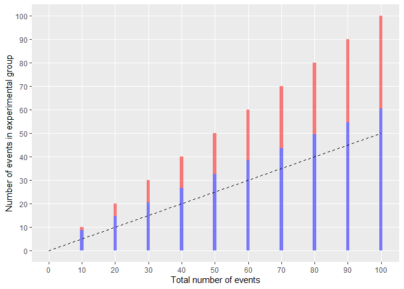
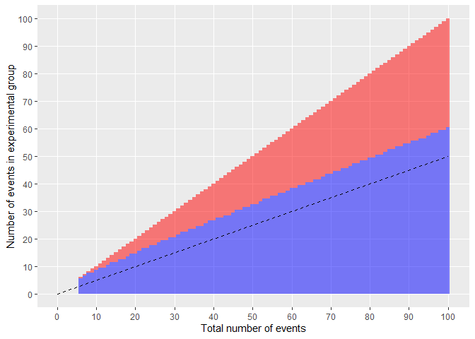
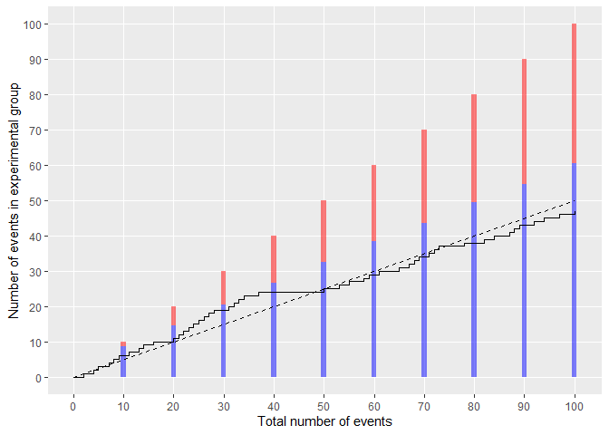
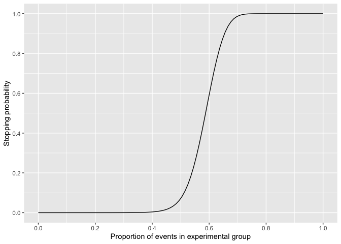
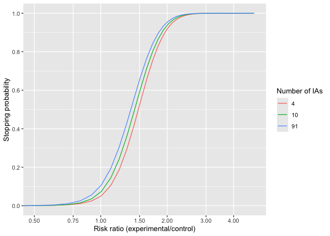

The harmBounds package calculates stopping probabilities, defines stopping boundaries and generates plots for safety monitoring using an event based approach.
The idea is to do simple one sample binomial exact tests on the proportion of events in the experimental arm. A safety problem is claimed if there is evidence that this proportion higher than what would be expected from the number of people under observation in the two arms (e.g. 0.5 in a 1:1 randomized trial).
The safety monitoring can be done continuously after every event or at a pre-specified total number of events. The nominal test-wise alpha would be calibrated to obtain desired properties, such as a certain proportion of stopping under alternative scenarios of some degree of safety problems (the power). An overall type I error control can also be implemented but we would usually not recommend that for safety testing, as the consequence of a type II error (not stopping for safety if the intervention is not safe) is arguably worse than of a type I error (stopping if the intervention is safe).
Installation
The package can be installed from GitHub with:
# install.packages("devtools")
devtools::install_github("CTU-Bern/harmBounds")Calculation of boundaries
Stopping boundaries can be calculated with function getHarmBound. Let’s assume a trial with 10 safety interim analyses after every 10 events (combined over both groups) up to a total of 100 events and a nominal test-wise alpha of 0.025.
hb<-getHarmBound(nevents = seq(10, 100, by = 10), alpha_test = 0.025, pH0 = 0.5)
hb
#> $bounds
#> events events_exp events_control alpha_test pH0 stop_prob_H0 cum_stop_prob_H0
#> 1 10 9 1 0.025 0.5 0.010742188 0.01074219
#> 2 20 15 5 0.025 0.5 0.016405106 0.02714729
#> 3 30 21 9 0.025 0.5 0.011266726 0.03841402
#> 4 40 27 13 0.025 0.5 0.007307253 0.04572127
#> 5 50 33 17 0.025 0.5 0.004798221 0.05051949
#> 6 60 39 21 0.025 0.5 0.003217823 0.05373732
#> 7 70 44 26 0.025 0.5 0.006730864 0.06046818
#> 8 80 50 30 0.025 0.5 0.003002399 0.06347058
#> 9 90 55 35 0.025 0.5 0.005713749 0.06918433
#> 10 100 61 39 0.025 0.5 0.002449994 0.07163432
#>
#> $cum_stop_prob
#> p cum_stop_prob hyp
#> 1 0.5 0.07163432 H0
#>
#> attr(,"class")
#> [1] "harmbound" "list"The data frame bounds specifies the boundaries at each interim analysis, events_exp is the minimal number of events in the experimental group that would lead to a stopping of the trial, rr the corresponding risk ratio and cum_stop_prob_H0 the cumulative stopping probability under the null hypothesis of no difference between the groups. The overall type I error of the safety testing is 7.2%.
If we would like to control the type I error at a specific level (which we do not necessarily recommend, see above), the test-wise alpha can be obtained using function getAlphaPerTest.
alphaPerTest<-getAlphaPerTest(nevents = seq(10, 100, by = 10), pH0 = 0.5, totalAlpha = 0.05)
alphaPerTest
#> [1] 0.01760014
hb<-getHarmBound(nevents = seq(10, 100, by = 10), alpha_test = alphaPerTest, pH0 = 0.5)
hb
#> $bounds
#> events events_exp events_control alpha_test pH0 stop_prob_H0 cum_stop_prob_H0
#> 1 10 9 1 0.01760014 0.5 0.010742188 0.01074219
#> 2 20 16 4 0.01760014 0.5 0.003862381 0.01460457
#> 3 30 22 8 0.01760014 0.5 0.004922465 0.01952703
#> 4 40 28 12 0.01760014 0.5 0.003896854 0.02342389
#> 5 50 33 17 0.01760014 0.5 0.008795958 0.03221985
#> 6 60 39 21 0.01760014 0.5 0.004049838 0.03626968
#> 7 70 45 25 0.01760014 0.5 0.002581452 0.03885114
#> 8 80 50 30 0.01760014 0.5 0.005311134 0.04416227
#> 9 90 56 34 0.01760014 0.5 0.002363631 0.04652590
#> 10 100 61 39 0.01760014 0.5 0.004516510 0.05104241
#>
#> $cum_stop_prob
#> p cum_stop_prob hyp
#> 1 0.5 0.05104241 H0
#>
#> attr(,"class")
#> [1] "harmbound" "list"The overall type I error is 5.1%, i.e. as close to 5% as possible (given the discrete nature of the test). Note that with this example that is slightly higher than 5%. If a strict control at 5% would required a totalAlpha of 0.049 would have to be chosen.
Plotting of boundaries
The boundaries can be plotted using harmboundPlot (or the harmbound.plot-method):
hb<-getHarmBound(nevents = seq(10, 100, by = 10), alpha_test = 0.025, pH0 = 0.5)
plot(hb) +
scale_x_continuous(breaks = seq(0, 100, by = 10), minor_breaks = NULL) +
scale_y_continuous(breaks = seq(0, 100, by = 10), minor_breaks = NULL) 
Where the bars indicate the time points of the interim analysis with the rejection region in red, and the dashed line represents the expectation (can be removed with ‘H0line = FALSE’)
Continuous monitoring could also be implemented:
hb<-getHarmBound(nevents = 0:100, alpha_test = 0.025, pH0 = 0.5)
plot(hb) +
scale_x_continuous(breaks = seq(0, 100, by = 10), minor_breaks = NULL) +
scale_y_continuous(breaks = seq(0, 100, by = 10), minor_breaks = NULL) 
Observed data can be added as vector with 0 and 1, indicated the sequence of the groups in which events occured (0 being the control and 1 the experimental group).
hb<-getHarmBound(nevents = seq(10, 100, by = 10), alpha_test = 0.025, pH0 = 0.5)
set.seed(123)
eventgroups<-rbinom(n = 100, size = 1, prob = 0.5)
plot(hb,observed=eventgroups) +
scale_x_continuous(breaks = seq(0, 100, by = 10), minor_breaks = NULL) +
scale_y_continuous(breaks = seq(0, 100, by = 10), minor_breaks = NULL)  The boundary is not breached at any of the 10 interim analysis.
Or with continuous monitoring:
set.seed(123)
hb<-getHarmBound(nevents = 0:100, alpha_test = 0.025, pH0 = 0.5)
eventgroups<-rbinom(n = 100, size = 1, prob = 0.5)
plot(hb, observed = eventgroups) +
scale_x_continuous(breaks = seq(0, 100, by = 10), minor_breaks = NULL) +
scale_y_continuous(breaks = seq(0, 100, by = 10), minor_breaks = NULL) Determine test-wise alpha
To set the test-wise alpha, we recommend to control the power rather than the type I error. I.e. to check that a sufficient proportion of trials are stopped under an appropriate alternative hypothesis (reflecting a safety problem).
Stopping probabilities for alternatives can also be obtained with the getHarmBound function. The alternative hypothesis can be specified as
pH1: the proportion of the events in the experimental group, with 0.5 being the null scenario for a 1:1 rando, and numbers from 0.5 to 1 indicating a safety problem.
rrH1: the risk ratio (experimental / control), with 1 being the null scenario and numbers >1 indicating a safety problem.
rdH1: the risk difference (experimental minus control), with 0 being the null scenario and numbers >0 indicating a safety problem. Here the control proportion (r0) and the total number of participants (n) have to be specified.
orH1: the odds ratio (experimental / control), with 1 being the null scenario and number >1 indicating a safety problem. Here the control proportion (r0) has to be specified.
#with proportion of events in the experimental group:
hb<-getHarmBound(nevents = seq(10, 100, by = 10), alpha_test = 0.025, pH0 = 0.5, pH1 = 0.6)
hb
#> $bounds
#> events events_exp events_control alpha_test pH0 stop_prob_H0 cum_stop_prob_H0 pH1 stop_prob_H1 cum_stop_prob_H1
#> 1 10 9 1 0.025 0.5 0.010742188 0.01074219 0.6 0.04635740 0.0463574
#> 2 20 15 5 0.025 0.5 0.016405106 0.02714729 0.6 0.09503665 0.1413940
#> 3 30 21 9 0.025 0.5 0.011266726 0.03841402 0.6 0.08037764 0.2217717
#> 4 40 27 13 0.025 0.5 0.007307253 0.04572127 0.6 0.06377080 0.2855425
#> 5 50 33 17 0.025 0.5 0.004798221 0.05051949 0.6 0.05117939 0.3367219
#> 6 60 39 21 0.025 0.5 0.003217823 0.05373732 0.6 0.04194665 0.3786685
#> 7 70 44 26 0.025 0.5 0.006730864 0.06046818 0.6 0.07679694 0.4554655
#> 8 80 50 30 0.025 0.5 0.003002399 0.06347058 0.6 0.03922701 0.4946925
#> 9 90 55 35 0.025 0.5 0.005713749 0.06918433 0.6 0.06524712 0.5599396
#> 10 100 61 39 0.025 0.5 0.002449994 0.07163432 0.6 0.03194760 0.5918872
#>
#> $cum_stop_prob
#> hyp p cum_stop_prob
#> 1 H0 0.5 0.07163432
#> 2 H1 0.6 0.59188721
#>
#> attr(,"class")
#> [1] "harmbound" "list"
#with a risk ratio
hb<-getHarmBound(nevents = seq(10, 100, by = 10), alpha_test = 0.025, pH0 = 0.5, rrH1 = 1.5)
hb
#> $bounds
#> events events_exp events_control alpha_test pH0 stop_prob_H0 cum_stop_prob_H0 pH1 stop_prob_H1 cum_stop_prob_H1
#> 1 10 9 1 0.025 0.5 0.010742188 0.01074219 0.6 0.04635740 0.0463574
#> 2 20 15 5 0.025 0.5 0.016405106 0.02714729 0.6 0.09503665 0.1413940
#> 3 30 21 9 0.025 0.5 0.011266726 0.03841402 0.6 0.08037764 0.2217717
#> 4 40 27 13 0.025 0.5 0.007307253 0.04572127 0.6 0.06377080 0.2855425
#> 5 50 33 17 0.025 0.5 0.004798221 0.05051949 0.6 0.05117939 0.3367219
#> 6 60 39 21 0.025 0.5 0.003217823 0.05373732 0.6 0.04194665 0.3786685
#> 7 70 44 26 0.025 0.5 0.006730864 0.06046818 0.6 0.07679694 0.4554655
#> 8 80 50 30 0.025 0.5 0.003002399 0.06347058 0.6 0.03922701 0.4946925
#> 9 90 55 35 0.025 0.5 0.005713749 0.06918433 0.6 0.06524712 0.5599396
#> 10 100 61 39 0.025 0.5 0.002449994 0.07163432 0.6 0.03194760 0.5918872
#>
#> $cum_stop_prob
#> hyp p rr cum_stop_prob
#> 1 H0 0.5 1.0 0.07163432
#> 2 H1 0.6 1.5 0.59188721
#>
#> attr(,"class")
#> [1] "harmbound" "list"We would stop in 7.2% of the trials under the null (no safety problem) and in 59.2% under the alternative (safety problem with 60% of the events in the experimental group, corresponding to a risk ratio of 1.5).
We can also specify a vector of alternatives and plot the cumulative stopping probabilities:
hb<-getHarmBound(nevents = seq(10, 100, by = 10), alpha_test = 0.025, pH0 = 0.5,
pH1 = seq(0,1,l=100))
hb$cum_stop_prob %>%
ggplot(aes(x = p, y = cum_stop_prob)) +
geom_line() +
ylab("Stopping probability") +
xlab("Proportion of events in experimental group") +
scale_x_continuous(breaks=seq(0,1,by=0.2),minor_breaks=seq(0,1,by=0.1)) +
scale_y_continuous(breaks=seq(0,1,by=0.2),minor_breaks=seq(0,1,by=0.1))
This can be done for a grid of alphas:
alphaPerTest <- getAlphaPerTest(nevents = seq(10, 100, by = 10), pH0 = 0.5,
totalAlpha = 0.05)
alist<-c(0.001,0.01,alphaPerTest,0.025,0.05)
hbl<-lapply(alist,function(x)
getHarmBound(nevents = seq(10, 100, by = 10), alpha_test = x, pH0 = 0.5,
pH1 = seq(0,1,l=100))$cum_stop_prob)
hbd<-data.frame(do.call(rbind,hbl),alpha=rep(alist,each=nrow(hbl[[1]])))
hbd$alpha<-as.factor(round(hbd$alpha,4))
hbd %>%
ggplot(aes(x = p, y = cum_stop_prob, colour=alpha)) +
geom_line() +
ylab("Stopping probability") +
xlab("Proportion of events in experimental group") +
scale_x_continuous(breaks=seq(0,1,by=0.1),limits=c(0.2,0.8)) +
scale_y_continuous(breaks=seq(0,1,by=0.2))or using risk ratios:
alphaPerTest <- getAlphaPerTest(nevents = seq(10, 100, by = 10), pH0 = 0.5,
totalAlpha = 0.05)
alist<-c(0.001,0.01,alphaPerTest,0.025,0.05)
hbl<-lapply(alist,function(x)
getHarmBound(nevents = seq(10, 100, by = 10), alpha_test = x, pH0 = 0.5,
rrH1 = seq(0,10,l=100))$cum_stop_prob)
hbd<-data.frame(do.call(rbind,hbl),alpha=rep(alist,each=nrow(hbl[[1]])))
hbd$alpha<-as.factor(round(hbd$alpha,4))
hbd$lrr<-log(hbd$rr)
hbd %>%
ggplot(aes(x = rr, y = cum_stop_prob, colour=alpha)) +
geom_line() +
ylab("Stopping probability") +
xlab("Risk ratio (experimental/control)") +
scale_x_continuous(trans='log', breaks=c(0.5,0.75,1,1.5,2,3,4),minor_breaks=NULL,limits=c(0.5,5)) +
scale_y_continuous(breaks=seq(0,1,by=0.2))
The step-wise alpha that leads to a reasonable stopping probability under an appropriate alternative can be selected. However, the steepness of the curve is not influenced by the alpha. We can only choose between making more type I or II errors but not reduce the overall error rate.
We could e.g. specify that at least 70% of the trials should be stopped if the risk of having a safety event increase by half (i.e. a risk ratio of 1.5), i.e. a test-wise alpha of close to 0.05. However, this would also lead to a stopping of 13% of the trials under the null.
On the other hand, if we control the type I error at 5% using a test-wise alpha of 0.0176, only 55% of the trials are stopped if there is a safety problem with a risk ratio of 1.5.
The same trade-off between type I and II errors can be observed when changing the number of interim analyses - the steepness of the curves is not affected.
nelist<-list(c(10,20,50,100),seq(10, 100, by = 10),seq(10, 100, by = 1))
hbl<-lapply(nelist,function(x)
getHarmBound(nevents = x, alpha_test = 0.025, pH0 = 0.5,
rrH1 = seq(0,10,l=100))$cum_stop_prob)
nis<-unlist(lapply(nelist,length))
hbd<-data.frame(do.call(rbind,hbl),ni=rep(nis,each=nrow(hbl[[1]])))
hbd$ni<-as.factor(hbd$ni)
hbd$lrr<-log(hbd$rr)
hbd %>%
ggplot(aes(x = rr, y = cum_stop_prob, colour=ni)) +
geom_line() +
ylab("Stopping probability") +
xlab("Risk ratio (experimental/control)") +
scale_x_continuous(trans='log', breaks=c(0.5,0.75,1,1.5,2,3,4),minor_breaks=NULL,limits=c(0.5,5)) +
scale_y_continuous(breaks=seq(0,1,by=0.2)) +
labs(colour="Number of IAs")
To actually decrease the total error rates (i.e. get steeper curves), we would need a higher total number of events:
nelist<-list(seq(10, 20, by = 10),seq(10, 50, by = 10), seq(10, 100, by = 10), seq(10, 200, by = 10))
hbl<-lapply(nelist,function(x)
getHarmBound(nevents = x, alpha_test = 0.025, pH0 = 0.5,
rrH1 = seq(0,10,l=100))$cum_stop_prob)
nis<-unlist(lapply(nelist,max))
hbd<-data.frame(do.call(rbind,hbl),ni=rep(nis,each=nrow(hbl[[1]])))
hbd$ni<-as.factor(hbd$ni)
hbd$lrr<-log(hbd$rr)
hbd %>%
ggplot(aes(x = rr, y = cum_stop_prob, colour=ni)) +
geom_line() +
ylab("Stopping probability") +
xlab("Risk ratio (experimental/control)") +
scale_x_continuous(trans='log', breaks=c(0.5,0.75,1,1.5,2,3,4),minor_breaks=NULL,limits=c(0.5,5)) +
scale_y_continuous(breaks=seq(0,1,by=0.2)) +
labs(colour="Total number of events")